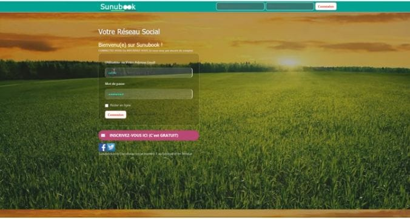

<!DOCTYPE html>
<html lang="en">
<head>
  <meta charset="UTF-8">
  <meta name="viewport" content="width=device-width, initial-scale=1.0">
  <title>Document</title>
  <style>
    table {
        width: 100%;
        border-collapse: collapse;
    }
    th, td {
        border: 1px solid black;
        padding: 8px;
        text-align: left;
    }
    th {
        background-color: #bf1010;
        color: azure;
    }
    tbody{
        background-color: rgb(126, 36, 36);
        color: bisque;
    }
    h3{
        color: rgb(168, 42, 42);
    }
    h2{
        color: rgb(126, 36, 36);
    }
p{
    border: solid black;
    height: 110px;
    color: black;
    padding: 12px;
}
h1{
    color: #111010;
    font-size: 51px;
}


video{
    width: 1100px;
    height: 500px;
   
}

    

</style>

</head>
<body>
  
</body>
</html>    
</head>
<body>
    <h1> <br> <br>
         THEME : PLATEFORME DE LECTURE EN LIGNE</h1></b>
    
    
    
    

          

            <h2> INTRODUCTION</h2>
            <p>La révolution numérique a transformé notre façon de consommer l'information et le divertissement,
                 et la lecture ne fait pas exception. Aujourd'hui, les plateformes de lecture en ligne connaissent un essor fulgurant,
                  offrant aux lecteurs un accès instantané à des millions de titres directement depuis leurs appareils électroniques. Des géants comme Kindle,
                   Wattpad et Scribd ont non seulement changé notre manière de lire, mais ont également redéfini le marché de l'édition et le rôle des auteurs. 
                      Ces plateformes permettent aux utilisateurs de lire, d'interagir et de partager 
                      des œuvres littéraires de manière numérique. Elles peuvent prendre la forme de sites web,
                       d'applications mobiles ou de liseuses électroniques, offrant ainsi une expérience de lecture
                        diversifiée et accessible. En constante évolution, ces plateformes jouent un rôle crucial dans
                         la promotion de la lecture et dans l'adoption de nouvelles pratiques culturelles. </p>

    

        <h2> 1.CONTEXTE HISTORIQUE DE LA PLATEFORME EN LIGNE</h2> <br>     
 Les plateformes de lecture en ligne ont émergé dans un contexte d'évolution technologique et de changements dans les habitudes de lecture. <br>
     <h2>A l'étranger</h2>
                
     La première plateforme de lecture en ligne notable est souvent considérée comme étant
     *Project Gutenberg*. Fondé en 1971 par Michael S. Hart, Project Gutenberg est la plus ancienne bibliothèque numérique au monde.
      Son objectif était de créer et de distribuer gratuitement des livres électroniques. 
      Le premier livre numérique mis en ligne par le projet était une version du "Déclaration d'indépendance des États-Unis". <br>
Évolution des plateformes de lecture en ligne <br>
- 1995 : Lancement de Amazon.com, qui a rapidement commencé à vendre des livres en ligne et 
a ensuite introduit le Kindle en 2007. <br>
- 2004 : Lancement de Google Books, une initiative de Google pour numériser des millions de livres et
les rendre accessibles en ligne. <br>
- 2008 : Lancement de Wattpad, une plateforme sociale pour la lecture et
l'écriture où les utilisateurs peuvent partager leurs propres histoires. <br>
     Avec la montée en puissance des smartphones et des tablettes, de plus en plus de lecteurs ont commencé à adopter la lecture numérique. Les plateformes de lecture en ligne ont dû s'adapter à cette transition en proposant des applications mobiles conviviales et des interfaces adaptées aux différents appareils.<br>
   
     - Au cours des années 2010, les modèles d'abonnement sont devenus populaires dans le secteur de la lecture en ligne. Les plateformes ont commencé à offrir des abonnements mensuels donnant accès à un vaste catalogue de livres numériques, offrant ainsi aux lecteurs une alternative économique à l'achat individuel de livres.<br>
    
   
   Mais pour se démarquer dans un marché de plus en plus concurrentiel, les plateformes de lecture en ligne ont continué à innover en introduisant de nouvelles fonctionnalités telles que la recommandation personnalisée, la lecture audio, la lecture sociale et la synchronisation multi-appareils. Cette diversification a permis de créer des expériences de lecture en ligne plus riches et engageantes pour les utilisateurs. <br>


                <h2>Au Sénégal</h2>
                - Lancement de SunuBook (2016) : <br>
   - SunuBook a été l'une des premières plateformes de lecture numérique au Sénégal.
    Elle a joué un rôle crucial en offrant une bibliothèque numérique axée sur la littérature africaine,
     permettant ainsi aux auteurs locaux de diffuser leurs œuvres et aux lecteurs de les découvrir plus facilement. <br>
    <br> 
    - partenariat entre YouScribe et Orange (2018) :
   - YouScribe, une bibliothèque numérique francophone, a établi un partenariat avec l'opérateur de télécommunications
    Orange pour offrir une vaste collection de livres numériques au Sénégal. Ce partenariat a considérablement élargi 
    l'accès aux ressources éducatives et littéraires, en particulier pour les utilisateurs de téléphones mobiles.
L'évolution des plateformes de lecture au Sénégal témoigne d'un engagement croissant en faveur de l'accessibilité
 et de la promotion de la culture littéraire. <br>
   <a href="https://apps.apple.com/us/app/youscribe/id863904637"> youScribe</a> <br>
   
En somme, l'évolution des plateformes de lecture en ligne s'inscrit dans un contexte de
                 transformation numérique et d'adaptation aux nouvelles technologies, offrant aux lecteurs un
                  accès plus facile et plus varié à la littérature et aux contenus écrits.
                
                <h2>2.LES OBJECTIFS</h2>
                <h3>a-l'objectif général</h3>
                L'objectif général de ce projet est de : Promouvoir l'accès à la lecture	
                      <h3>b-l'objectif spécifique</h3>  
                  . Encourager la lecture et l'apprentissage <br><br>
                   . Promouvoir la diversité culturelle <br><br>

                   . Optimiser l'expérience utilisateur<br><br>
                   . Soutenir les auteurs et l'industrie du livre<br><br>
                   . Assurer la protection des droits d'auteur<br><br>
                  . Innover  les technologies pour l'évolution future<br><br>
                    .Enrichir la connaissance des utilisateurs <br>

                <h2>3.IMPORTANCE ET PERTINANCE DU PROJET</h2>
  Voici quelques points clés sur leur importance et leur pertinence :

    <h4>Accessibilité et Commodité</h4>

    - Accessibilité Universelle : Les plateformes de lecture en ligne permettent un accès instantané à une vaste gamme de livres, articles et documents partout dans le monde, à tout moment, depuis n'importe quel appareil. <br>

    - Portabilité : Contrairement aux livres physiques, les lecteurs peuvent transporter une bibliothèque entière dans leurs appareils électroniques, facilitant ainsi la lecture en déplacement. <br>
    
    <h4>Diversité de Contenu</h4>
    - Large Sélection : Elles offrent une variété presque infinie de genres et de formats, allant des romans et des magazines aux publications scientifiques et aux blogs. <br>

    - Mises à Jour en Temps Réel : Les utilisateurs peuvent accéder aux dernières publications et mises à jour sans attendre les rééditions ou les réimpressions.  <br>
    
    <h4>Coût et Économie</h4> 
    - Réduction des Coûts : Les plateformes en ligne souvent proposent des abonnements qui permettent de lire plusieurs titres à moindre coût par rapport à l'achat de livres physiques. <br>

    - Accès Gratuit : Nombre de ces plateformes proposent également du contenu gratuit, rendant la lecture accessible à un public plus large. <br>
    
     <h4>Environnement</h4>
    - Impact Écologique : La lecture en ligne réduit la demande de papier et les coûts de transport, contribuant ainsi à diminuer l'emprunt. <br>
    <h4>Personnalisation et Interactivité</h4>
    - Expérience Personnalisée : Les plateformes de lecture en ligne peuvent fournir des recommandations personnalisées basées sur les préférences de lecture des utilisateurs. <br>
 - Fonctionnalités Avancées : Elles offrent des fonctionnalités comme les surlignages, les notes, la recherche de mots-clés et la possibilité de partager des extraits, améliorant ainsi l'expérience de lecture. <br>
     <h4>Éducation et Apprentissage</h4>
      - Ressources Éducatives : Les étudiants et les professionnels bénéficient d'un accès facile à des manuels, des articles de recherche et d'autres ressources pédagogiques. <br>
- Apprentissage Continu : Les plateformes en ligne facilitent l'apprentissage autonome et continu, en permettant aux utilisateurs de suivre des cours et de lire des matériaux éducatifs à leur propre rythme. <br>
    <h4>Soutien aux Auteurs et aux Éditeurs</h4>
    - Auto publication : Les auteurs peuvent publier leurs œuvres directement sur ces plateformes, ce qui permet de contourner les barrières traditionnelles de l'édition et de toucher un public mondial.  <br>
- Visibilité et Découverte : Elles offrent aux nouveaux auteurs une plus grande visibilité et aident les lecteurs à découvrir de nouvelles voix littéraires. <br>
 En résumé, les plateformes de lecture en ligne révolutionnent la manière dont nous accédons et consommons la littérature et l'information, offrant une accessibilité, une diversité, une économie de coût, et une durabilité environnementale sans précédent. 
       Elles enrichissent également l'expérience de lecture grâce à des fonctionnalités interactives et personnalisées, tout en soutenant les auteurs et les éditeurs dans un marché en constante évolution.
    
    
    <h2>4.ANALYSE SWOOT</h2>

<table>
    <thead>
        <tr>
            <th>Forces</th>
            <th>Faiblesses</th>
            <th>Opportunités</th>
            <th>Menaces</th>
        </tr>
    </thead>
    <tbody>
        <tr>
            <td>Capacité à travailler en équipe</td>
            <td>Contrainte technique</td>
            <td>Croissance de l'adoption des smartphones</td>
            <td>Concurrence intense</td>
        </tr>
        <tr>
            <td>Maîtrise des langages de programmation (HTML, CSS, JavaScript)</td>
            <td>Incompréhension des bases de données (SQL)</td>
            <td>Partenariats avec des institutions éducatives</td>
            <td>Accès limité à Internet</td>
        </tr>
        <tr>
            <td>Accès à une large gamme de ressources éducatives</td>
            <td>Conformité légale et réglementation relative aux droits d'auteur</td>
            <td>Modèles de tarification flexibles</td>
            <td>Barrières économiques</td>
        </tr>
        <tr>
            <td>Adaptation et curiosité</td>
            <td>Manque de contenu initial</td>
            <td>Promotion de la littérature locale</td>
            <td>Sécurité et protection des données</td>
        </tr>
    </tbody>
</table>

<h2>5. LES CONCURRENTS :</h2>
a- Les concurrents directs sont: <br>
.SunuBook <br>
.Amazon Kindle <br>
.Scribd <br>
.Google Play Books <br>
.Wattpadd <br> <br> 



 <br><br><br>
</div>
b- Les concurrents indirects sont: <br>
.Nexflix <br>
.Disney <br> 
.Reseaux sociaux <br>
.Les bibliothèque physiques<br>
.Les livres imprimés <br><br> <br> 
<div class="concu">
   
    
    
    
     <br>
</div> 
<h2>6.LES CIBLES :</h2>
Les plateformes de lecture s'adressent à divers segments de la population,
     en fonction de leurs intérêts, de leurs besoins et de leurs comportements de consommation.
      Voici une liste des principales cibles des plateformes de lecture : <br>

.Les amateurs de livres et de la lecture <br>
.Etudiants et universitaires <br>
.Enfants et adolescents  <br>
.Professionnels <br>
.Personnes cherchant a ameliorer leur bien-être
</body>
</html>

